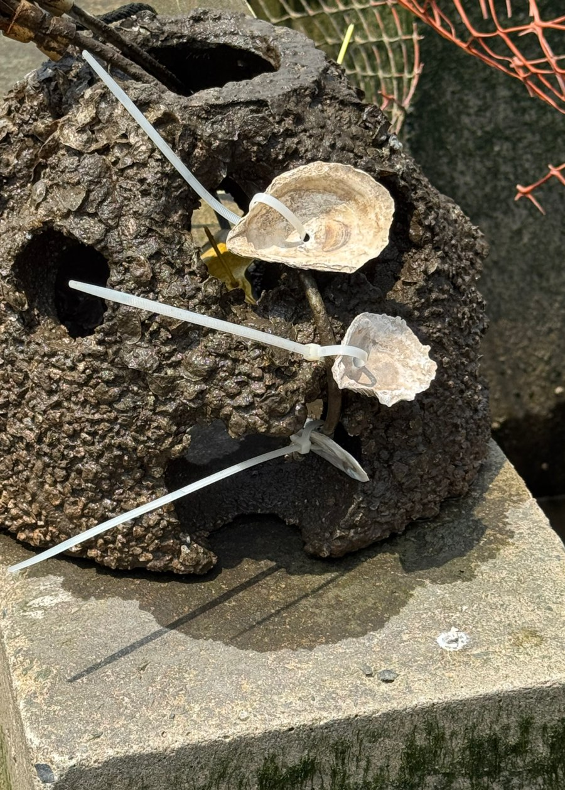

Research
Following the products of photosynthesis
Broadly, my research focuses on the products of photosynthesis and how those products affect natural environments, in both ancient and modern ecosystems. Photosynthetic organisms divide the carbon they take up among different biochemical pools (proteins, lipids, and carbohydrates) depending on their environment. If there aren't enough nutrients for growth, for example, relatively less carbon goes toward proteins.
My lab, the Baruch Microbial Biogeochemistry Lab (BMBL), works in the laboratory and uses the tools of stable-isotope biogeochemistry to ask questions about microbial ecosystems. To study modern ecosystems, I use the chemical and taxonomic makeup of microbial communities as indicators of conditions such as light, sediment accumulation, and oxygen. To study ancient ecosystems, I develop methods based on the ratio of carbon stable isotopes. Some organic molecules keep this chemical signal for billions of years, so it can reveal how the organism that made a molecule allocated its carbon and what that says about the environment it lived in. Because my research centers on specific tools rather than one specific question, I get to collaborate on questions about environments as far away as the surface of Mars and as close by as a reconstructed oyster habitat in the Hudson River.
Undergraduates carry out this research, both in our lab at Baruch and at our partner institutions. Meet the team.
Our two research themes:
- Carbon allocation in photosynthetic microbes, including a proxy for past atmospheric CO2
- Microbes and oyster restoration in the Hudson River, with the Hudson River Park Trust
1. Carbon allocation in photosynthetic microbes

Where does the photosynthetic sugar go? Sugar release and past CO2
Photosynthetic organisms do a critical job for the biosphere: they turn inorganic carbon into sugars that feed both themselves and the surrounding community. Marine phytoplankton release between 2 and 50% of the carbon they fix, mostly as simple and complex sugars (mono- and polysaccharides). The amount and type of sugar they release changes with light, oxygen, and nutrient availability. It remains unknown, however, whether releasing sugar changes the carbon isotopic composition (δ13C) of the carbon that stays in the cell. I think stable isotope geochemists should explicitly consider these processes when interpreting the δ13C of individual organisms and of the dissolved and particulate organic matter in modern ecosystems.
This question matters for reconstructing Earth's climate. One way to estimate past atmospheric CO2 is the εp proxy, which is based on the ratio of carbon-13 to carbon-12 in biological material. Photosynthetic enzymes such as RuBisCO prefer the lighter carbon-12, and how strongly that preference is recorded depends on how much CO2 is available. Sugars tend to carry more carbon-13 than the rest of the cell. If a cell releases a lot of sugar, the organic matter left behind should look relatively depleted in carbon-13 even when CO2 hasn't changed. Together with Dr. Sarah Hurley's lab at Lamont-Doherty Earth Observatory, we grow marine phytoplankton under tightly controlled laboratory conditions. We then measure the carbon isotope ratios of their lipids and carbohydrates to troubleshoot this proxy for past atmospheric CO2. A related project asks whether alkenones change in chemistry with depth in the ocean. Alkenones are lipids made by certain phytoplankton and used to reconstruct past sea surface temperature and CO2.
With Dr. Elliott Mueller, we are also using QIRN, a modeling framework that tracks stable isotopes through networks of metabolic reactions, to understand how phytoplankton allocate their carbon.
Sugar and carbon export in the Sargasso Sea
Phytoplankton at the ocean's surface take up CO2 and send particles of organic carbon to the deep ocean, where the carbon can be stored long-term. This “biological pump” depends on nutrients in the surface ocean. In the Sargasso Sea, climate-driven stratification is decreasing surface nutrients, yet the export of organic carbon by microbes has held steady.
We hypothesize that nutrient stress makes cells produce more extracellular polysaccharides (EPS). EPS helps cells form biofilms and clump together, so they would sink faster and keep carbon export going. To test this, we grow Prochlorococcus marinus, the most abundant cyanobacterium in the ocean, in Sargasso Sea water under nutrient-replete and nutrient-limited conditions. We then measure growth, sugar production, and how quickly the cells sink. In a closely related study, we are testing whether EPS production changes the carbon isotope signal (εp) recorded in cyanobacterial biomass, independent of CO2.
Collaborators: Dr. Sarah Hurley (Lamont-Doherty Earth Observatory, Columbia University); Dr. Elliott Mueller (University of Colorado Boulder; QIRN isotope modeling of phytoplankton carbon allocation).
Funding: PSC-CUNY Research Award; INSPIRE Visiting Fellowship, Lamont-Doherty Earth Observatory; Baruch College ExCEL Faculty/Student Research Award (Sargasso Sea student research).
2. Microbes and oyster restoration in the Hudson River

Restoring oyster habitat in the Hudson River is a promising way to regain the ecosystem services oyster reefs provide, such as filtering water and creating habitat. The Atlantic oyster is native to the Hudson River Estuary and can help remove excess nitrogen pollution. Native populations have stayed small, though, since they collapsed from overharvesting in the 19th century. As part of restoration efforts, the Hudson River Park Trust's River Project deploys miniature “reef balls” seeded with juvenile oysters beside the reconstructed Gansevoort salt marsh. These small replicas can be monitored more closely than the Park's large oyster habitats, and oysters don't do equally well on all of them.
Microbes coat underwater surfaces in biofilms, which are communities wrapped in extracellular substances made mostly of sugars and proteins. Biofilms are generally thought to help young oysters attach and grow. My lab asked whether the composition or activity of reef ball biofilms could explain differences in how seeded oysters persisted on intertidal and subtidal reef balls. We incubated cured oyster shells alongside the reef balls through the growing season. We then used DNA sequencing to identify the microbial communities, analyzed the chemistry of their extracellular substances, and measured nitrogen cycling. The results so far suggest that the physical setting where a habitat is placed is an important factor in oyster survival. We are continuing to monitor microbial communities in the Park, including how they influence local oxygen conditions.
Read our report to the Hudson River Park Trust (PDF)
Collaborators: Dr. Chester Zarnoch (Baruch College); Amanda Flores (Baruch College); Ilana Cohen (CUNY Graduate Center); Dr. Theodore Muth (Brooklyn College); Hudson River Park Trust, River Project.
Funding: PSC-CUNY Research Award; Hudson River Park Trust, CUNY Research Alliance Scholars Program.
Funding and partners
My lab's research is supported by:
- PSC-CUNY Research Awards (both themes)
- Hudson River Park Trust, CUNY Research Alliance Scholars Program
- INSPIRE Visiting Fellowship, Lamont-Doherty Earth Observatory, Columbia University (carbon allocation theme)
- Baruch College ExCEL Faculty/Student Research Award
Partner institutions: Hudson River Park Trust; Brooklyn College, CUNY; Lamont-Doherty Earth Observatory of Columbia University.
See all of our collaborators.